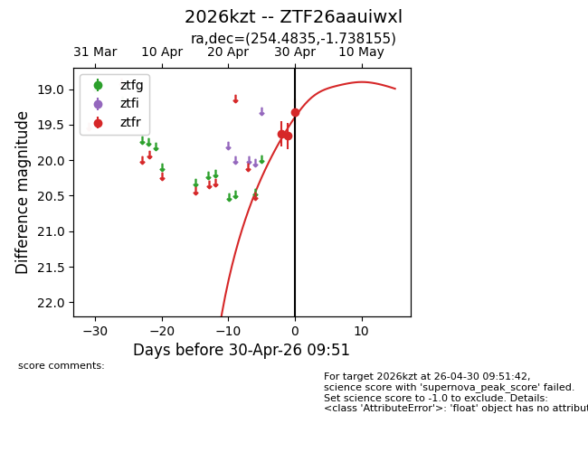
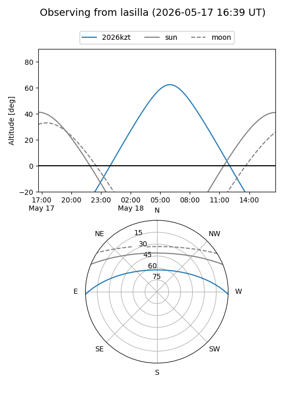
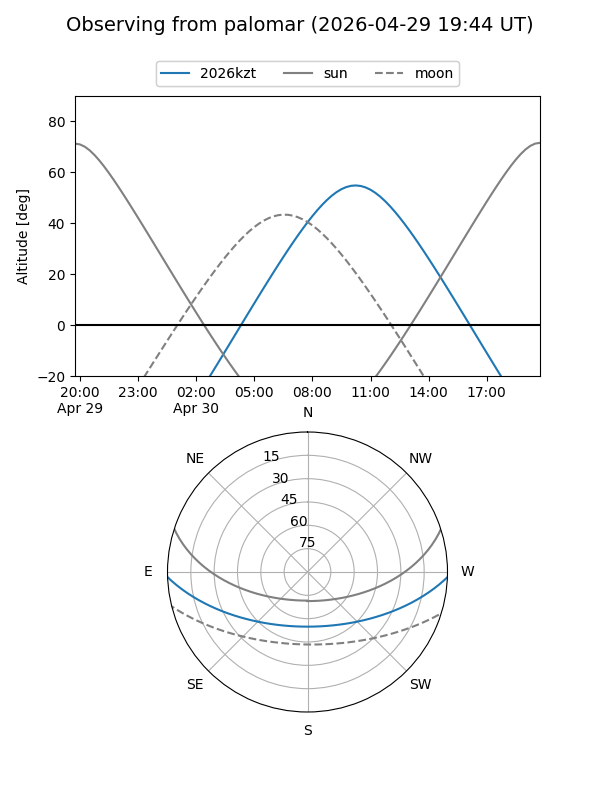
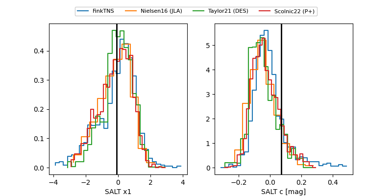

2026kzt
Target 2026kzt at 2026-04-30 09:56
Aliases and brokers:
FINK: link
Lasair: link
ALeRCE: link
TNS: link
YSE: link
alt names
ZTF26aauiwxl (ztf,fink_ztf)
2026kzt (tns,yse)
Coordinates:
equatorial (ra, dec) = 254.4835,-1.73816
equatorial (HMS+DMS) = 16:57:56.04,-01:44:17.36
galactic (l, b) = (17.4493,+24.13866)
Flags:
Photometry:
last ztfr=19.32
3 ztfr detections
Lightcurve

Visibility


Additional plots
